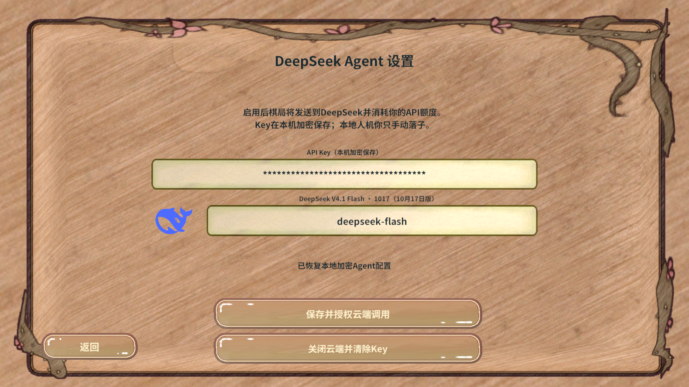

适用范围：本次自动化运行。结论只由断言决定；图片只能证明当时画面，不能替代数值断言。
1. 概览
| 报告目录 | D:\AAAAAAA王者荣耀项目组工作日志\RevGame\.codex\work\pvp-fixes-20261107\mcp\20261107-001401-39cd7a26 |
|---|---|
| 截图数量 | 1 |
| 动图数量 | 0 |
2. 指标
| 结论 | 通过 |
|---|---|
| 步骤数 | 13 |
| 截图 | 1 |
| 清理步骤 | 1 |
3. 截图

4. 动图
GIF 用来观察动态效果；单帧截图表达不了连招、位移与粒子节奏。
本次没有动图。动态效果（技能、位移、粒子、UI 过渡）应补抓 GIF。
5. 说明
结论只由断言决定；图片是当时画面的直接证据。